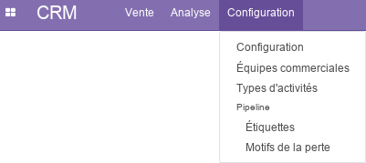
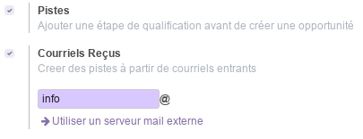
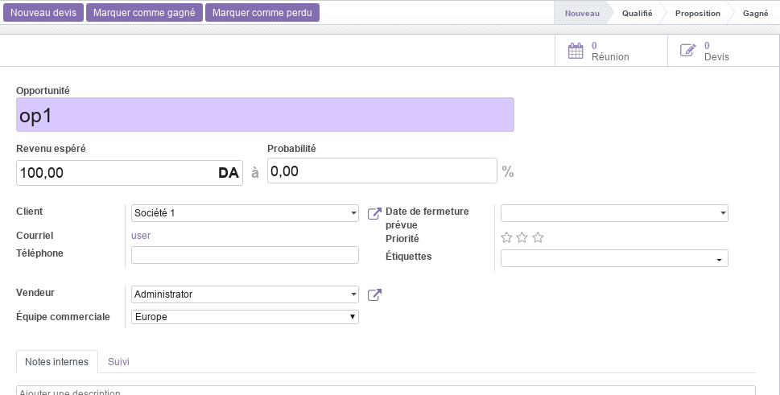
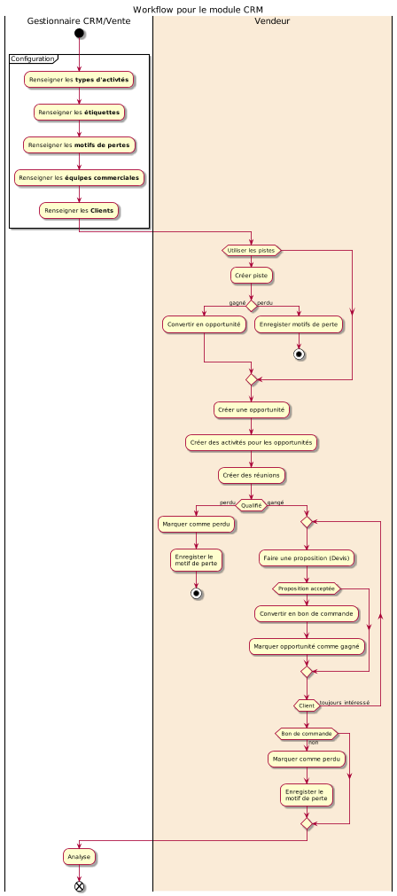

Module CRM¶
Ce document illustre les différentes fonctionnalités du module CRM d’odoo 13 community (CRM : Customer Relationship Management / Gestion de la Relation Client).
Présentation du module¶
Ce module, orienté client par excellence, est destiné au suivi des pistes et à l’élaboration des prévisions de vente. Il permet :
d’utilisez des données concrètes afin de prendre les meilleures décisions.
d’utiliser des tableaux de bords personnalisés afin d’avoir un aperçu rapide de l’entreprise.
de planifier des activités en fonction des scripts de vente: appels, réunions, mailing et devis.
de passer facilement en revue les performances et les prochaines activités.
de suivez les performances en temps réel et de les comparez aux objectifs mensuels.
d’organiser le travail sur la base des prochaines actions planifiées.

Configuration (admin)¶
Cette section, réservée aux administrateurs et Gestionnaires des ventes, permet de définir les paramètres généraux du module, tel que l’ajout d’une étape de qualification avant création d’une opportunité et la génération des pistes.
Pistes¶
L’option Pistes active de nouvelles fonctionnalités permettant aux Vendeurs de disposer d’une partie dédiée à la gestion des pistes.

Si cette option est activé, un nouveau menu Pistes apparait, et le Gestionnaire des vente peut choisir d’utiliser les courriels entrants pour la génération des pistes.

Generation pistes¶

L’option Visits to Leads permet de convertir les visiteur du site web en pistes (lead) à partir de leur adresse IP (option payante).
L’option Lead Enrichment permet de créer des pistes à partir des données des sociétés en se basant sur les adresses emails (option payante).
L’option Lead Enrichment permet de générer de nouvelles pistes en fonction des pays, secteurs d’activité, taille d’entreprise, … (option payante).
Équipes commerciales¶
Cette section permet de renseigner les informations nécessaires aux équipes commerciales de l’entreprise. Pour plus de détails, consulter le module Vente.
Types d’activités¶
Cette section permet de prédéfinir l’ensemble des activités liées à la relation client, tel que les appels téléphoniques, l’envoi d’emails, les rendez-vous, …
Pour chaque activité, les paramètres suivants sont prédéfinis.

Pipeline - Étiquettes¶
Cette section permet de prédéfinir des étiquettes a associé aux opportunités, tel que les types de produits et services (formation, conseil, …).
Pipeline - Motifs de la perte¶
Cette section permet de prédéfinir des motifs de pertes d’une opportunité ou d’une piste. Exemple : trop chère, pas de compétence, pas assez de stock, …
Vente¶
Mon Pipeline¶
Le pipline est l’outil le plus important dans le CRM. Il permet de définir et de suivre l’évolution des opportunités selon plusieurs étapes prédéfinies : Nouveau, Qualifié, Proposition, Gagné.

On commence par créer une opportunité en renseignant ses informations.

L’opportunité peut donner lieu à un ou plusieurs Devis et peut être marqué comme gangé ou perdu.
Le vendeur peut créer et suivre les Réunions relative à l’opprtunité directement à partir de son formulaire de définition.
Devis¶
Cette section permet de gérer tous les devis crées par les vendeurs de l’entreprise, notamment ceux générés à partir des opportunités. Pour plus de détails, consulter le module Vente.
Pistes¶
Si l’option pistes est activé dans la configuration du module, le Responsable des ventes peut créer de nouvelles pistes manuellement afin que les vendeurs les qualifies par la suite.

Si une piste est probante, elle peut Convertie en opportunité et le vendeur aura la main pour ajouter un nouveau client avec les informations du contact saisies ou de fusionner avec un client/une opportunité existante.

Sinon, la piste peut être Marqué comme perdue.
Analyse¶
La partie analyse permet aux Gestionnaires des ventes de visualiser des vues synthétiques sous différentes formes (listes, tableau croisé ou graphes) de la situation des pistes, du pipeline et des activités.
Workflow¶

Plus de détails¶
Pour la collaboration sur les formulaires de ce module, consulter la fonctionnalité conversations.